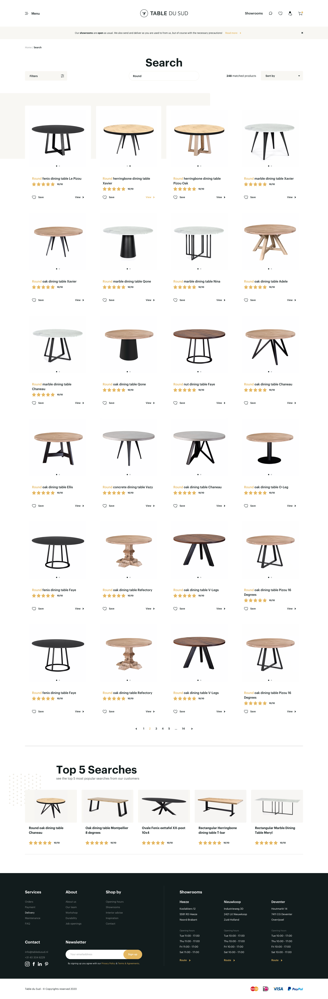
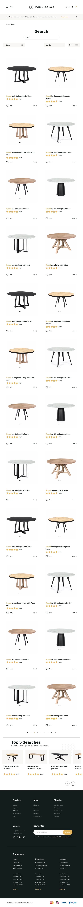
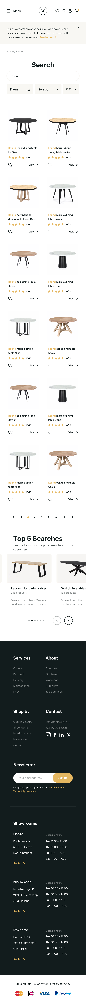

Responsive Layouts
The interface system was structured across three core device breakpoints: Desktop (1680 px), Tablet (834 px), and Mobile (414 px), ensuring consistent browsing, clear product presentation, and smooth filter drawer interactions across all screen sizes.

Desktop (1680px)

Tablet (834px)

Mobile (414px)
Responsive screen layouts developed in Sketch for Desktop, Tablet, and Mobile viewports. Click any image to inspect full screen.